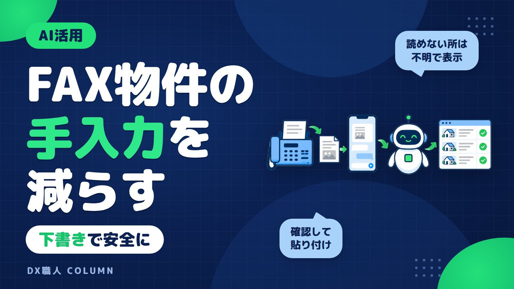

不動産FAX物件入力の手入力をAIで減らす安全な下書き運用
不動産会社では、FAX図面やPDFを見ながら賃料、住所、設備を打ち直す時間が残りがちです。急いで入力すると、数字や広告可否の見落としも起きます。ここでは、LINEに送ってAIが下書きし、担当者が原本確認して使う方法を説明します。小さな会社でも始めやすい形です。

この記事の要点
- AIは下書き、人が確認
- LINEにFAXやPDFを送る
- 不明点を不明で返す
- 誤読チェックを先に決める
- 補助金は最新要領で確認
不動産FAX物件入力はAIで直接登録せず下書き化する
結論から言うと、不動産FAX物件入力の手入力はAIで減らせます。
ただし、AIがポータルへそのまま登録する形はおすすめしません。
FAX図面は文字が薄くなりやすい書類です。
3と8、0と6、㎡と坪、賃料と管理費を読み違える場合があります。手書きの追記や、余白にある条件も見落としやすい部分です。
安全なのは、AIが入力用の下書きを作り、人が原本で確認して貼り付ける流れです。
目指すのは、完全な自動登録ではありません。紙を見ながらゼロから打つ作業を、確認して使える下書きへ変えることです。
| 使い方 | おすすめ度 | 理由 |
|---|---|---|
| AIがポータルへ直接登録 | 低い | 誤読がそのまま掲載されるおそれがある |
| AIが入力用の下書きを作成 | 高い | 人が確認してから使える |
| AIが不明点も表示 | 高い | 原本で見る場所が分かる |
DX職人では、いつものLINEからFAXやPDFを送り、AIシステムが物件入力用の下書きを返す流れを想定できます。新しい画面を覚えるより、今の事務作業に近い形で始めやすくなります。
最初に見るチェックリストで作業範囲を決める
不動産FAX入力自動化で失敗しやすいのは、最初から全部を任せようとすることです。
まずは、どの入力を減らしたいのかを決めます。
確認する項目は、次の4つです。
- 毎日多い書類はFAX、PDF、写真のどれか
- 入力先はポータル、管理表、社内台帳のどれか
- 必ず原本確認する項目は何か
- AIに送らない情報は何か
最初は、毎日一番多く届く物件種別から始めます。賃貸居住用、売買戸建て、事業用では、必要な項目が違うためです。
| 分類 | 下書きする項目 | 先に決めること |
|---|---|---|
| 基本情報 | 物件名、号室、種別 | 建物名と部屋番号の書き方 |
| 所在地 | 住所、建物名 | 丁目、番地、号室の確認方法 |
| 交通 | 路線、駅名、徒歩分数 | バス利用や分数の扱い |
| 条件 | 賃料、価格、管理費、共益費 | 税込表示と単位の見方 |
| 初期費用 | 敷金、礼金、保証金、更新料 | 月数か金額かの確認 |
| 面積 | 専有面積、土地面積、建物面積 | ㎡と坪の違い |
| 設備 | 駐車場、ペット、宅配ボックス | 有無と別途費用 |
| 取引情報 | 取引態様、広告可否、掲載期限 | 掲載してよい範囲 |
この表を自社用に少し直すだけでも、確認と貼り付けが楽になります。AIに何を返してほしいかがはっきりするためです。
LINEに送る依頼文例と返ってくる下書き
LINEでAIに頼む文面は、長くなくて大丈夫です。
大切なのは、読めない箇所をAIが勝手に補わないようにすることです。
FAX図面やPDFを送ったあと、次のように依頼します。
このFAX図面から、物件概要、ポータル入力用の項目、不明点を作ってください。読み取れない箇所は不明と書いてください。
賃貸物件が多い会社なら、もう少し具体的にできます。
賃貸ポータルへ入力する前提で、物件名、号室、住所、交通、賃料、管理費、敷金礼金、面積、設備、広告可否を表にしてください。不明な数字は推測しないでください。
返ってくる形は、次の4つに分けると実務で使いやすくなります。
- 物件概要：所在地、交通、賃料、間取り、面積
- 貼り付け用項目：ポータルの入力順に並べた表
- 不明点：薄い文字、切れている箇所、手書き部分
- 確認メモ：原本で見るべき数字や条件
不動産の物件入力AIは、完璧な文章を返すよりも、確認場所が分かるほうが役に立ちます。
不明を不明と出すことが、安全に使うためのコツです。
物件入力AIの誤読を防ぐ確認ポイント
AIの下書きは便利ですが、確認なしで掲載してはいけません。
毎回同じ順番で見るチェックリストを用意すると、担当者が変わっても確認しやすくなります。
特に注意する項目は次の通りです。
- 賃料、価格、管理費、共益費
- 敷金、礼金、保証金、更新料
- 所在地、建物名、部屋番号
- 専有面積、土地面積、建物面積
- 間取り、階数、築年
- 駐車場、ペット、楽器、事務所利用
- 広告可否、取引態様、掲載期限
- 担当者名、電話番号、メールアドレス
数字はトラブルになりやすい部分です。
AIの表だけを見ず、原本のFAXやPDFを横に置いて確認します。
| 誤読しやすい例 | 確認すること |
|---|---|
| 3と8、0と6 | 賃料、号室、電話番号を原本で見る |
| ㎡と坪 | 面積の単位を確認する |
| 賃料と管理費 | 金額の欄を分けて見る |
| 広告可否 | 掲載してよいかを必ず見る |
| 掲載期限 | 古い図面を使っていないか確認する |
確認のコツは、すべてを同じ重さで見ないことです。賃料、所在地、広告可否、掲載期限から先に見ると、重要な見落としを減らせます。
不動産FAX入力自動化の実務フロー
ここでいう自動化は、人の確認をなくすことではありません。
FAXやPDFから必要項目を拾い、入力しやすい形に整える部分をAIに任せることです。
基本の流れは次の通りです。
- FAXをPDF化する、またはスマホで撮影する
- LINEでDX職人のAIシステムへ送る
- 物件入力用に下書きしてほしいと添える
- AIが項目表、不明点、確認メモを返す
- 担当者が原本のFAXやPDFで確認する
- ポータルや管理表へ貼り付ける
- 掲載前に重要項目をもう一度見る
OCRは、画像やPDFの文字を読み取る仕組みです。
AIシステムは、OCRで読んだ文字を、物件入力の順番へ並べ直します。
小さな不動産会社では、専用の大きな仕組みよりも、いつものLINEで送れるほうが始めやすい場合があります。事務所でFAXを受けた人が、そのままLINEへ送る運用なら、作業の流れを大きく変えずに済みます。
管理表、紹介文、問い合わせ返信まで広げる
FAXから抜き出した物件情報は、ポータル入力だけで終わりではありません。
管理表への転記、物件紹介文、お客様への返信文にも使えます。
たとえば、LINEで次のように頼めます。
この物件を単身者向けに80文字で紹介してください。事実だけで、確認していない内容は入れないでください。
問い合わせ返信なら、次のような下書きも作れます。
- 物件名を入れた返信文
- 空室確認中であることを伝える文
- 内見候補日を聞く文
- 折り返し連絡の文
注意したいのは広告表現です。
根拠のない最上級表現や、確認していないメリットは入れないほうが安全です。AIには、事実だけ、未確認の内容は入れない、と毎回指示します。
問い合わせ対応や資料作成まで広げる考え方は、不動産DXの始め方 小規模会社の問い合わせと資料AI活用でも整理しています。
個人情報と送ってよい資料を分ける
物件図面には、掲載に必要な情報だけでなく、担当者の直通番号や個人名が入っている場合があります。
申込者情報や入居者情報が写っている書類は、特に注意が必要です。
AIに送る前に、次の3つへ分けます。
- 掲載や入力に必要な物件情報
- 担当者確認のために必要な連絡先
- 送らないほうがよい個人情報
物件入力の下書きだけなら、申込者情報まで送る必要はありません。
必要がなければ、個人名や個人の電話番号は黒塗りにします。
判断に迷う場合は、この情報がなくても下書きできるかを基準にします。物件名、所在地、条件、設備が分かれば足りる場面は多くあります。
AIに入れる情報の考え方は、AIに入力してよい情報、避けたほうがよい情報でも詳しく書いています。
費用と補助金は導入前に最新情報を確認する
AIシステムの費用は、読み取る書類の種類、LINEとのつなぎ方、出力したい形式で変わります。
物件概要だけでよいのか、管理表、紹介文、返信文まで作るのかでも変わります。
DX職人では、まず実際のFAXやPDFを見て、どの入力を減らすかを整理します。
最初から大きく作るより、物件入力の下書き、管理表、紹介文、問い合わせ返信の順に広げるほうが無理がありません。
費用面では、IT導入補助金などを使える場合があります。
ただし、補助金や助成金は年度ごとに内容、対象、締切が変わります。2026年11月19日時点でも、最新の公募要領で確認することが必要です。
制度ごとに要件があるので、ご相談の際に確認します。
必ず使えるものではありませんが、導入前に確認しておく価値はあります。
不動産業でAIシステムを検討する場合は、IT導入補助金を不動産業のAIシステム導入に使う事前確認点も参考にしてください。
よくある質問
不動産のFAX物件入力はAIで完全自動化できますか？
完全な自動登録より、AIで下書きを作り、人が原本確認して貼り付ける流れがおすすめです。FAXは文字が薄く、数字や単位の誤読が起きる場合があります。
FAX図面が薄くても物件入力AIで読めますか？
読める場合もありますが、薄い文字や手書き部分は不明として返す設計が安全です。賃料、所在地、広告可否などは必ず原本で確認します。
LINEに送るだけでポータル入力までできますか？
LINEに送ると、AIが入力用の下書きや不明点を返す流れにできます。ポータルへの掲載前には、人が確認して貼り付ける形が現実的です。
不動産FAX入力のAIシステムに補助金は使えますか？
IT導入補助金などを使える場合があります。ただし、対象や締切は年度で変わります。最新の公募要領を確認し、制度ごとの要件は相談時に確認します。